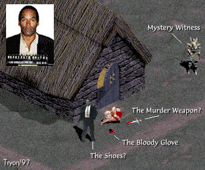

Up to His Old Tricks?
Here is a comic I released just after the trial of the "Juice".
EXCLUSIVE! Never before seen photo of one of
the most notorious PKillers (or TK's) on Battle.Net
leaving the scene of the crime.
 |
Tristram Authorities have asked anyone having
information on the identity or whereabouts of this
fiend, or of the mysterious witness to come forward.